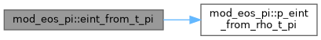
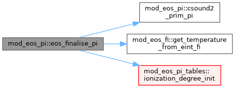
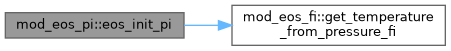
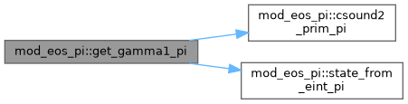
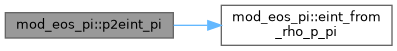
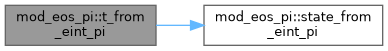
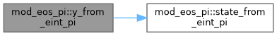

|
MPI-AMRVAC 3.2
The MPI - Adaptive Mesh Refinement - Versatile Advection Code (development version)
|
PI (partial-ionisation, eos_type='PI') arm of the eos% family. More...
Functions/Subroutines | |
| subroutine, public | eos_init_pi () |
| Lifecycle (PI arms of the eos_init / eos_finalise dispatchers). The eos% block getters (update_eos_PI, get_Te_PI, get_csound2_PI, get_Rfactor_*_PI) are PRIVATE: they are bound to eos% pointers inside eos_finalise_PI, so no external module needs to name them. | |
| subroutine, public | eos_finalise_pi () |
| PI arm of eos_finalise (after unit_* are set): ride FI's ideal-gas getter set and RR=1 normalisation (the variable mean-mass enters only via eosget_Rfactor, wired by the seam link arm), then initialise the ionisation backend. In energy mode eint carries the ionisation energy, so swap in the backend eint->T inversion. | |
| subroutine, public | get_gamma1_pi (w, x, ixil, ixol, gamma1) |
| Effective Gamma1 = cs2 * rho / p for the same primitive state. | |
| subroutine, public | state_from_eint_pi (rho, eint, t, p, rfactor, iz_h, iz_he) |
| Conserved gas internal energy -> temperature, thermal pressure, R. Inverse of p_eint_from_rho_T_PI. eint is the GAS internal energy (mechanical energy already removed by the caller). | |
| subroutine, public | p_eint_from_rho_t_pi (rho, t, p, eint, rfactor, iz_h, iz_he) |
| Temperature -> thermal pressure and GAS internal energy (incl. ion energy) | |
| subroutine, public | eint_from_rho_p_pi (rho, p, eint) |
| Primitive pressure -> GAS internal energy (prim -> conserved direction): invert (rho,p)->T then map T->eint, so the forward/inverse pair stay consistent. | |
| subroutine, public | csound2_prim_pi (rho, p, csound2) |
| Adiabatic sound speed squared from primitive (rho, p). | |
| double precision function, dimension(log_nh, log_t), public | eint_from_t_pi (log_nh, log_t) |
| Internal energy per H from temperature: eint/nH(T). | |
| double precision function, dimension(log_nh, log_p_nh), public | p2eint_pi (log_nh, log_p_nh) |
| eint/p factor from pressure per H: maps p -> eint = p * (this). | |
| double precision function, dimension(log_nh, log_eint_nh), public | t_from_eint_pi (log_nh, log_eint_nh) |
| Temperature from internal energy per H. | |
| double precision function, dimension(log_nh, log_eint_nh), public | y_from_eint_pi (log_nh, log_eint_nh) |
| Electron-to-hydrogen ratio ne/nH from internal energy per H. ne/nH = iz_H + A_He*iz_He*(1+iz_He) (matches the R-factor numerator's electron count; second He ionisation assumed equal to the first). | |
PI (partial-ionisation, eos_type='PI') arm of the eos% family.
The adapter between the ionisation backend (mod_eos_PI_tables) and the eos% authority. PI rides the FI fully-ionised ideal-gas closure (RR=1 normalisation, p=(gamma-1) eint when ionE=F) and differs only through the variable mean-mass that enters via eosget_Rfactor and – in energy mode – the ionisation energy folded into eint. mod_eos_PI_tables has no mod_eos dependency, so eos% -> ionisation is acyclic.
Structure mirrors mod_eos_FI / mod_eos_LTE: A. init / finalise – wire the eos% pointer targets B. generic block getters – the eos%-interface routines bound for PI (csound2, gamma1, Rfactor, Te update); module-agnostic via iw_rho/iw_e/iw_te, so the hd/mhd/ffhd seams share ONE copy instead of three. The seam keeps only the B/KE-specific conversions. C. scalar combined-solve backend – one ionisation solve yields T,p,R(,iz) together; called per-cell by the seam conversions and by section D. D. fl-port scalar shims – f(log_nH,log_x) callbacks for the cooling / conduction port objects. mod_eos re-exports the public names so the seams reach them through the single use mod_eos facade, exactly as for the FI/LTE kernels.
| subroutine, public mod_eos_pi::csound2_prim_pi | ( | double precision, intent(in) | rho, |
| double precision, intent(in) | p, | ||
| double precision, intent(out) | csound2 | ||
| ) |
Adiabatic sound speed squared from primitive (rho, p).
Definition at line 311 of file mod_eos_PI.t.
| subroutine, public mod_eos_pi::eint_from_rho_p_pi | ( | double precision, intent(in) | rho, |
| double precision, intent(in) | p, | ||
| double precision, intent(out) | eint | ||
| ) |
Primitive pressure -> GAS internal energy (prim -> conserved direction): invert (rho,p)->T then map T->eint, so the forward/inverse pair stay consistent.
Definition at line 298 of file mod_eos_PI.t.
| double precision function, dimension (log_nh, log_t), public mod_eos_pi::eint_from_t_pi | ( | double precision, intent(in) | log_nh, |
| double precision, intent(in) | log_t | ||
| ) |
Internal energy per H from temperature: eint/nH(T).
Definition at line 328 of file mod_eos_PI.t.

| subroutine, public mod_eos_pi::eos_finalise_pi |
PI arm of eos_finalise (after unit_* are set): ride FI's ideal-gas getter set and RR=1 normalisation (the variable mean-mass enters only via eosget_Rfactor, wired by the seam link arm), then initialise the ionisation backend. In energy mode eint carries the ionisation energy, so swap in the backend eint->T inversion.
direct Te cache refresh each substep
read the cached Te (refreshed above)
R-factor: dispatch on pi_table. Physics-independent, so bound here (was in the hd/mhd/ffhd link arms) -> these targets stay private.
Fully-ionised particle counts (2 + 3*A_He per H; ne/nH = 1 + 2*A_He)
Initialise the ionisation backend. Under the FI normalisation the (a,b) factors are absorbed into unit_*, RR=1, and b=(2+3 A_He) is the full-ionisation reference in unit_pressure; the module's R = (1+iz_H+A_He(...))/Rfactor_norm must reduce to 1 at full ionisation, so Rfactor_norm = 2+3 A_He (the LTE a=b=1 value 1+4 A_He would be wrong).
Energy mode: eint carries the ionisation energy, so swap in the backend eint->T inversion and the energy-mode csound2 (both physics-independent; get_csound2_PI was in the link arms).
Definition at line 82 of file mod_eos_PI.t.

| subroutine, public mod_eos_pi::eos_init_pi |
Lifecycle (PI arms of the eos_init / eos_finalise dispatchers). The eos% block getters (update_eos_PI, get_Te_PI, get_csound2_PI, get_Rfactor_*_PI) are PRIVATE: they are bound to eos% pointers inside eos_finalise_PI, so no external module needs to name them.
get_gamma1_PI is bound to the phys_get_gamma1 pointer in the seam (the phys layer owns that pointer), so it must stay public. Scalar combined-solve backend, called per-cell by the seam conversions (rho = nH = 1 per H under the FI normalisation; eint is the GAS internal energy, carrying the ionisation energy in energy mode). fl-port scalar callbacks (signature f(log_nH, log_x) -> scalar) for the cooling / conduction port objects. PI's T-only ionisation is nH-independent, so log_nH is ignored and quantities are evaluated per H. PI arm of eos_init (before units are known): PI shares the FI temperature-from-pressure getter – T=p/(R*rho) routed through eosget_Rfactor, which the seam points at the ionisation R-factor.
Definition at line 73 of file mod_eos_PI.t.

| subroutine, public mod_eos_pi::get_gamma1_pi | ( | double precision, dimension(ixi^s, nw), intent(in) | w, |
| double precision, dimension(ixi^s, 1:ndim), intent(in) | x, | ||
| integer, intent(in) | ixi, | ||
| integer, intent(in) | l, | ||
| integer, intent(in) | ixo, | ||
| l, | |||
| double precision, dimension(ixi^s), intent(out) | gamma1 | ||
| ) |
Effective Gamma1 = cs2 * rho / p for the same primitive state.
Definition at line 145 of file mod_eos_PI.t.

| double precision function, dimension (log_nh, log_p_nh), public mod_eos_pi::p2eint_pi | ( | double precision, intent(in) | log_nh, |
| double precision, intent(in) | log_p_nh | ||
| ) |
eint/p factor from pressure per H: maps p -> eint = p * (this).
Definition at line 335 of file mod_eos_PI.t.

| subroutine, public mod_eos_pi::p_eint_from_rho_t_pi | ( | double precision, intent(in) | rho, |
| double precision, intent(in) | t, | ||
| double precision, intent(out) | p, | ||
| double precision, intent(out) | eint, | ||
| double precision, intent(out) | rfactor, | ||
| double precision, intent(out), optional | iz_h, | ||
| double precision, intent(out), optional | iz_he | ||
| ) |
Temperature -> thermal pressure and GAS internal energy (incl. ion energy)
Definition at line 285 of file mod_eos_PI.t.
| subroutine, public mod_eos_pi::state_from_eint_pi | ( | double precision, intent(in) | rho, |
| double precision, intent(in) | eint, | ||
| double precision, intent(out) | t, | ||
| double precision, intent(out) | p, | ||
| double precision, intent(out) | rfactor, | ||
| double precision, intent(out), optional | iz_h, | ||
| double precision, intent(out), optional | iz_he | ||
| ) |
Conserved gas internal energy -> temperature, thermal pressure, R. Inverse of p_eint_from_rho_T_PI. eint is the GAS internal energy (mechanical energy already removed by the caller).
Definition at line 273 of file mod_eos_PI.t.
| double precision function, dimension (log_nh, log_eint_nh), public mod_eos_pi::t_from_eint_pi | ( | double precision, intent(in) | log_nh, |
| double precision, intent(in) | log_eint_nh | ||
| ) |
Temperature from internal energy per H.
Definition at line 344 of file mod_eos_PI.t.

| double precision function, dimension (log_nh, log_eint_nh), public mod_eos_pi::y_from_eint_pi | ( | double precision, intent(in) | log_nh, |
| double precision, intent(in) | log_eint_nh | ||
| ) |
Electron-to-hydrogen ratio ne/nH from internal energy per H. ne/nH = iz_H + A_He*iz_He*(1+iz_He) (matches the R-factor numerator's electron count; second He ionisation assumed equal to the first).
Definition at line 353 of file mod_eos_PI.t.
